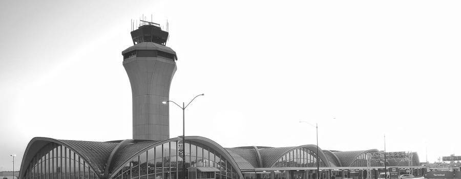
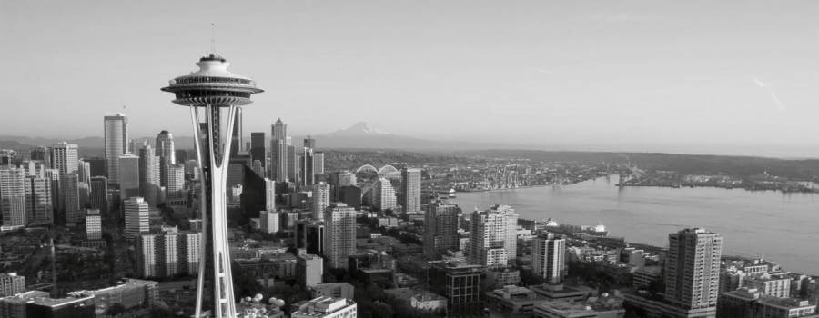
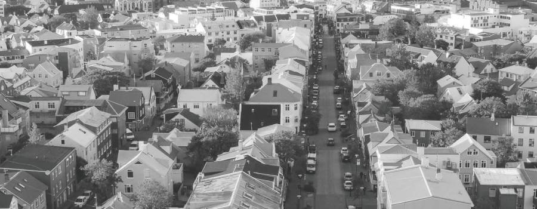
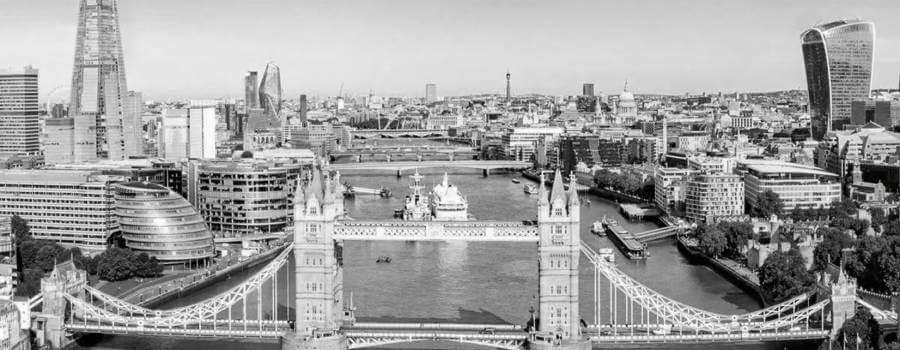
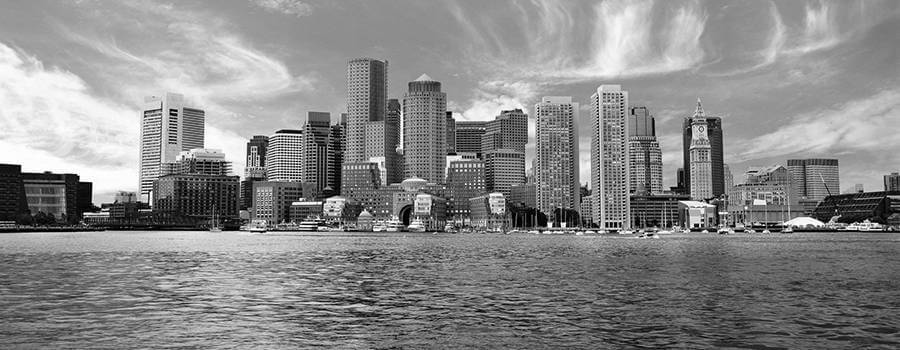

Book of the Marvels of the World (according to me (so far (limited to places I have traveled to by aeroplane as an adult)))
A brief introduction to my travelogue

Lambert International Airport - St. Louis, MO
When I was a kid, I was lucky enough to get a chance to visit some great places. For example, I once went to Chattanooga, Tennesee. However, I was not the person who decided to visit these places, and my memory of them is a bit fuzzy.
As an adult, I have had the privelege of traveling to several world-class cities by aerpolane. This web page describes a little bit about my travels and the places that I have visited. To keep this accounting more concise, I have limited the list of visits to places exclusively reached using air travel, so if I arrived by car, boat, or train, those places are not included. Sorry, but you won't be reading about the amazing times I've had in Big Bend National Park, Mackinac Island, or Paris, France.
Earlier in my life, I had a hyphenated surname. This makes traveling significantly more difficult than if you just have one comprised of the normal 26 characters of the alphabet. For best results, I highly recommend getting your hyphen removed if you have one. Also, you should probably get a Real ID.
New York, New York
New York, New York
They say if you can make it in New York, New York, you can make it anywhere. On my first visit to the Big Apple, the airline I was flying on had a computer system failure, so my direct flight was cancelled while I was at the airport, waiting to board. The gate agent helpfully told me that I could rush to an aeroplane that would take me to Boston, where I could find a connecting flight to New York, New York. He assured me that he would call ahead and arrange everything with a gate agent in Boston if we could just hurry to board that flight. So that's exactly what I did. Running through the terminal as though it were a scene from a movie, we (my wife and I) barely boarded the aeroplane just as the gates were closing. We had made it; what a relief! A few hours later, we touched down in Beantown to discover a completely desserted Logan International Airport. Perhaps it was the nerves of wondering if the helpful gate agent had relayed the itenerary, but I don't even remember other passengers or the crew there. If you've seen the first few moments of 28 Days Later (or The Walking Dead), it felt kind of like that. It was midnight.
There was one other person at the terminal, though: Boston's grumpiest gate agent. She had not been told that we would be arriving. She did not have an itenerary for us to board a new flight. There were no more flights. It was midnight, and the system-wide crash would take days for the airline to fix. Furthermore, there were no trains running, and there were no hotels in Boston, she assured us. But we were welcome to drop in a quarter, rent a luggage cart, and sleep on that.
So we did what any determined traveler would do in that situation: we headed to the car rental area. Apparently, this is where all the other passengers from our flight had congregated. They too had been redirected and needed to leave Þe Olde Towne by car. And the other passengers had rented them all. Enterprise would handily rent us a box truck that got 8 miles to the gallon. Alas, we did not have a significant amount of furniture to move. So we did what any determined traveler would do in that situation: we headed to the Avis booth, which was avoided like the plague for some reason, and we rented a Ford Focus. At 1:00 in the morning, we clambered into the subcompact and headed southbound. We drove through the dark for four hours and 226 miles. Then, as we were dead-tired and the sun was thinking of getting out of bed, we saw the City That Never Sleeps. I don't know if we could make it in New York, New York, but I do know that we can make it into New York, New York.
I am including New York, New York in my list of cities even though I first arrived by car because I have subsequently visited several times by aeroplane without all of the hassle.
New York, New York is considered to be the birthplace of the pizza pie, or as I sometimes call it, pizza π. Many fight over which pizzeria makes the best pizza pie, and while I believe all pizza pie is good pizza pie, I recommend visiting Juliana's Pizza Pie in Brooklyn, New York, New York.
Seattle

Seattle, WA
Due to the aforementioned airline debacle, my wife and I were given vouchers for a pair of free flights. This afforded us the opportunity to visit the other coast of America, and we set our heading to Seattle, WA. After touching down at SeaTac, we took the monorail up to the Capital Hill neighborhood where we'd be staying. Then we walked the city, drank some coffee, and caught some fish (from a monger, not a pole).
Here's my rating of several of Seattle's best attractions:
Attraction
Rating
Hills
8
Sidewalk accessibility
3
Coffee shops
9
Pike Place
6
Starbucks roasting facility
7
Bainbridge ferry
8
Bainbridge Island
9
Pop Culture Museum
5
Tree bananas
8
Frasier
5
If you ever want to learn to climb a tree, the Pacific Northwest is a great place to learn!
San Fran is a great place to visit. With a storied history, world-class restaurants, and a cable car system, it's a must-see. Unfortunately, my phone died just before we were going to see Alcatraz. Since I had to go to the Apple store to get it replaced, we missed out on visiting the Rock.
Here's a list of convicts whose cells I did not see:
Arthur Barker
Al Capone
Mickey Cohen
Machine Gun Kelly
Robert Stroud, The Bird Man of Alcatraz
If your phone is going to die, make sure it is three days before the warranty expires. That way, you get a replacement at no additional cost!
Reykjavík

Reykjavík, Iceland
Iceland is a beautiful country. It sometimes feels so otherworldly that you might feel like you're on a different planet. In fact, many movies use Iceland as a stand-in for other worlds because it's more feasible than internplanetary travel.
Below is a ranking of my favorite movies that were shot in Iceland:
Interstellar
Batman Begins
Letters from Iwo Jima
Flags of Our Fathers
The Secret Life of Walter Mitty
Noah
Oblivion
Rogue One: A Star Wars Story
Star Trek Into Darkness
Prometheus
Star Wars: The Force Awakens
Stardust
Lara Croft: Tomb Raider
Judge Dredd
Die Aother Day
Thor: The Dark World
Iceland is the number one consumer of Pepsi Max, which also happens to be my wife's favorite beverage. You can also buy salted licorice there. Yum!
London, England

London, England
London, England is an excellent place to visit. The only problem with this place is that they don't speak an intelligible form of English. Please review this helpful English-English dictionary for your travels:
Hullo
Hello
Colour
Color
Bo'ohw'o'wo'er
Bottle of water
There are only so many historical venues you can drag your wife to before she starts giving you exasperated looks.
Boston

Boston, MA
Boston is another storied town, and is especially fun to visit when it's your intended destination. Here's a secret: I love history. So visiting America's Walking City is a great way to discover history coming alive and stand in the footsteps of those who have come before us. And it's not just Irish immigrants who have a story to tell about The Athens of America. From the first American patriots to the bar that inspired a series based on Frasier Crane (5/10), every block is filled with history, including a historical block that was also filled with unrefined sugar-syrup in 1919. Here's what Stephen Puleo has to say about The Great Molasses Flood:
Molasses, waist deep, covered the street and swirled and bubbled about the wreckage …. Here and there struggled a form—whether it was animal or human being was impossible to tell. Only an upheaval, a thrashing about in the sticky mass, showed where any life was …. Horses died like so many flies on sticky fly-paper. The more they struggled, the deeper in the mess they were ensnared. Human beings—men and women—suffered likewise.
Dark Tide: The Great Boston Molasses Flood of 1919
As it happens, there actually are hotels available to rent in Boston. One of them has a line-of-sight to a rooftop where you just might catch Batman shadow boxing for a photo shoot.